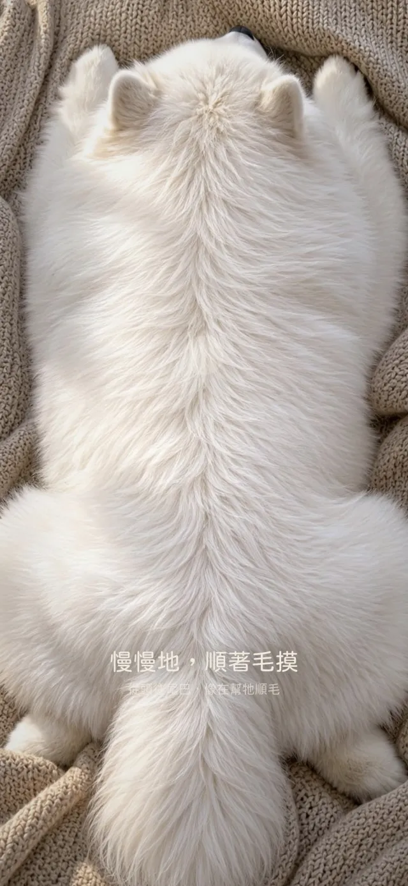
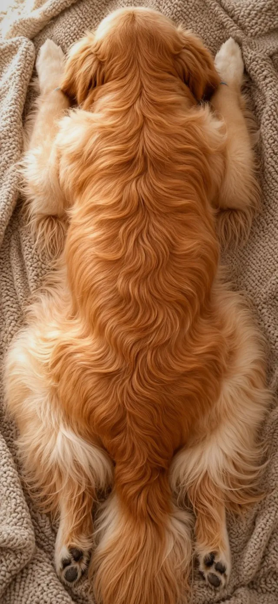
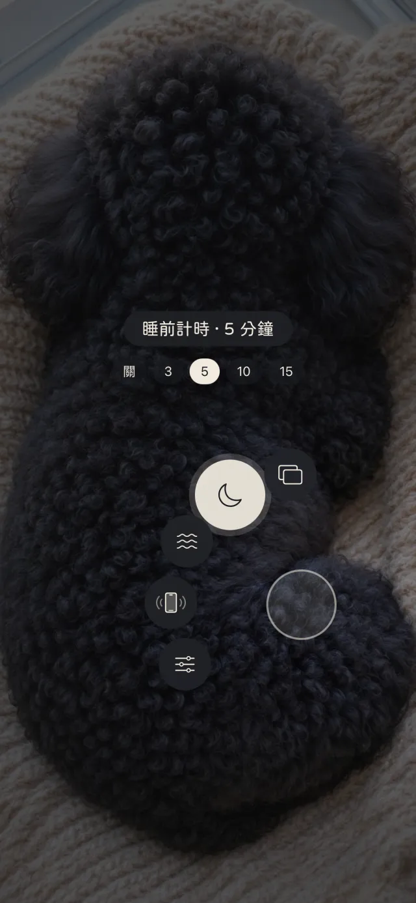
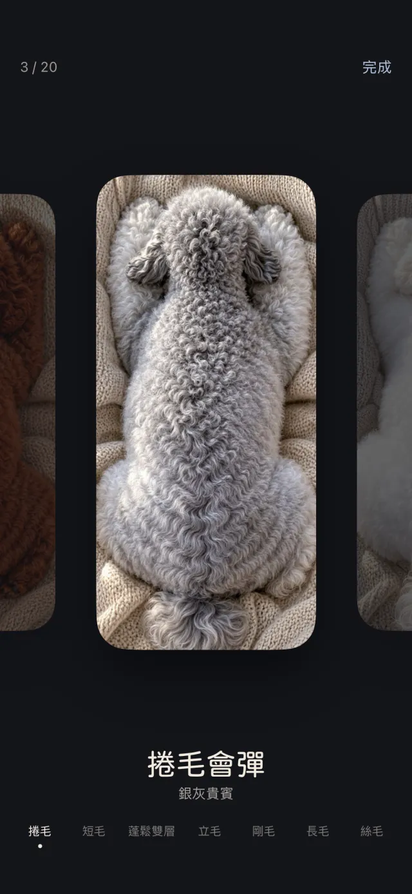

iPhone 睡前療癒 App
摸一隻睡著的狗，
讓自己慢下來。
手指順著毛慢慢摸，毛會被推倒，放開會彈回。摸著摸著，牠的呼吸會變慢，最後睡得很沉。
在 App Store 下載- ✓ 20 隻狗、7 種毛
- ✓ 沒有分數、任務、餵食
- ✓ 不用註冊

手感
毛真的會被推動
順著毛摸，毛會倒向手指，放開後慢慢彈回。逆著摸，毛會翻起來，過一陣子才倒回去。捲毛會彈、長毛跟著手飄、短毛很服貼，每一種摸起來都不一樣。

選單
手停住不動，選單就在拇指旁
摸的時候畫面上什麼都沒有。想換狗或設定計時，手指按住不動 0.8 秒，五顆按鈕會在拇指旁開出來。不放手滑過去選，放開就好。

換狗
20 隻狗，一隻一隻遇見
黑貴賓、奶茶短毛、柴犬、薩摩耶、黃金獵犬這 5 隻免費。其他 15 隻是會員才能摸，可以先摸 20 秒試試，或看一段廣告當天摸。

睡前
牠睡著了，你也差不多了
慢慢摸大約一分鐘，牠會睡得很沉，畫面跟著暗下來。設了睡前計時的話，時間到時呼吸聲淡出、畫面全黑，輕點一下才回來。
▲ 摸的時候畫面上沒有任何按鈕。
這些時候用得到
- 睡前躺在床上
- 心裡亂的時候
- 等車、排隊的空檔
- 想念自己的狗
基本資料
| 狗 | 20 隻（免費 5 隻） |
|---|---|
| 毛的手感 | 7 種：捲毛、短毛、蓬鬆雙層、立毛、剛毛、長毛、絲毛 |
| 聲音 | 只有很淡的呼吸聲，可以關掉 |
| 震動 | 只在牠有反應時偶爾一下，可以關掉 |
| 帳號 | 不用註冊 |
| 價格 | 免費（有廣告）；會員一次買斷 |
| 系統 | iOS 17 以上的 iPhone |
廣告只出現在換狗頁和設定頁的底部，摸的畫面不會有廣告。
免費版
- 5 隻狗
- 睡前計時、呼吸聲、震動都能用
- 換狗頁、設定頁底部有廣告
- 看一段廣告，當天可以摸一隻鎖住的狗
會員（一次買斷）
- 20 隻狗都能摸
- 沒有廣告
- 之後新增的狗也包含
- 換手機時，用同一個 Apple 帳號恢復購買